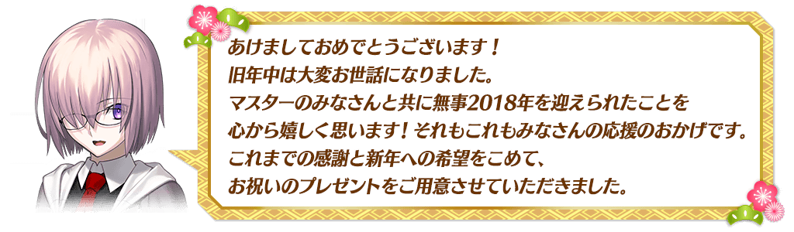
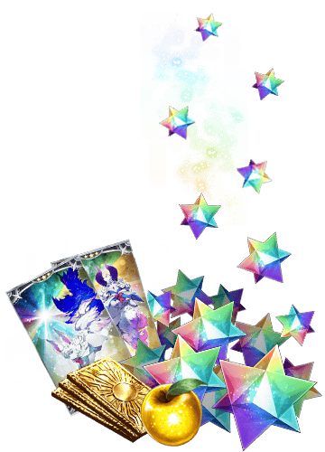
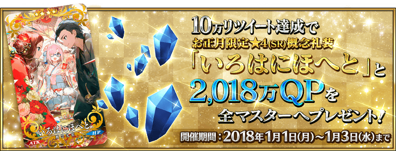
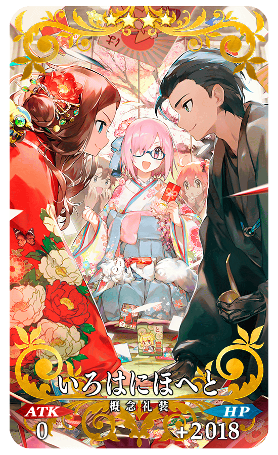
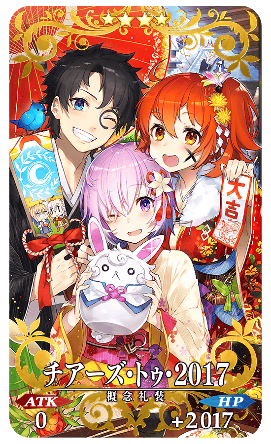
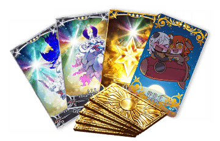
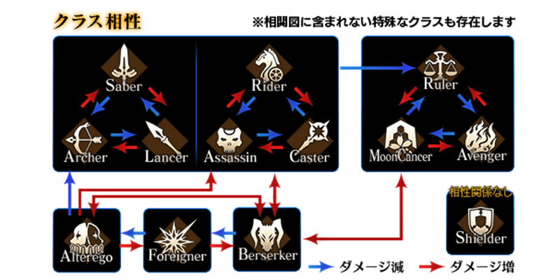
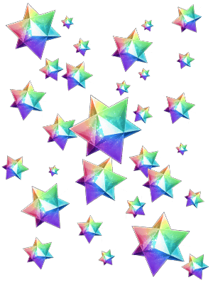
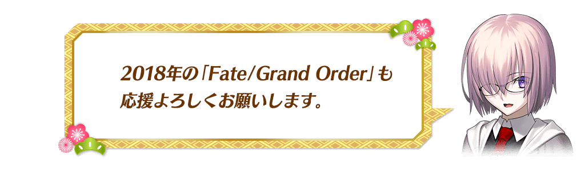

|
給各位Master的壓歲錢！ ◆舉辦期間◆ 2018年1月1日(一) AM3:00～1月4日(四) AM2:59 ◆贈送對象◆ |
 |
| 登入時間 | 贈送內容 |
|---|---|
| 1月1日(一) AM3:00～ 1月2日(二) AM2:59 |
聖晶石 18個 呼符 1張 |
| 1月2日(二) AM3:00～ 1月3日(三) AM2:59 |
黃金果實 18個 呼符 1張 |
| 1月3日(三) AM3:00～ 1月4日(四) AM2:59 |
英靈結晶・星之芙芙ALL★3(HP) 9張 英靈結晶・太陽之芙芙ALL★3(ATK) 9張 呼符 1張 |
※請注意未在各自的登入時間的期間內登入的話無法領取。
※禮物各只能領取1次。

在官方推特上方固定顯示的「2018年新年宣傳活動舉辦！」推特的轉推數，於下述期間內達成10萬轉推的話，對遊玩遊戲的全部Master贈送豪華報酬！
Fate/Grand Order官方推特:@fgoproject
◆舉辦期間◆
於2018年1月1日(一)官方推特上的推特刊載後～1月3日(三) 22:59
◆配布預定日◆ 2018年1月4日(四) AM3:00～1月5日(五) AM2:59
◆贈送對象◆
全部的Master對象
※在舉辦期間內達成10萬轉推的話，新玩家必須在配布預定最終日1月5日(五) AM2:59前通過「特異點F 炎上汙染都市 冬木 第3節」。
| 達成目標(轉推數) | 達成報酬 |
|---|---|
| 10萬轉推 | ・新年限定★4(SR)概念禮裝「いろはにほへと」 ・2,018萬QP |
※在舉辦期間內未達到達成目標的轉推數的話，無法領取達成報酬。
※期間內未登入的話無法達成報酬。
◆新年限定概念禮裝◆
|  |
★★★★SR |
自12月31日(日) 23:00，在達文西工房的「稀有稜鏡交換」追加下述的道具。
|
◆期間限定道具的交換期間◆ |
◆期間限定道具◆
| 追加道具 | 能交換 次數 |
1次交換所需的 稀有稜鏡數 |
|---|---|---|
| 【2018年新年限定】傳承結晶 | 1次 | 5個 |
| 【2018年新年限定】英靈結晶・流星之芙芙ALL★4(HP) | 1次 | 3個 |
| 【2018年新年限定】英靈結晶・日輪之芙芙ALL★4(ATK) | 1次 | 3個 |
| 【2018年新年限定】友情點數 20,000pt | 5次 | 1個 |
| 【2018年新年限定】概念禮裝經驗值卡★4(SR)宇宙犬 10張 | 1次 | 3個 |
◆新追加道具(常駐)◆
| 追加道具 | 能交換 次數 |
1次交換所需的 稀有稜鏡數 |
|---|---|---|
| チアーズ・トゥ・2017 | 1次 | 3個 |
※追加到「稀有稜鏡交換」的「★4(SR)チアーズ・トゥ・2017」為常駐，並無交換期限。
※關於持有「★4(SR)チアーズ・トゥ・2017」的玩家，剩餘次數的顯示會是「0次」，無法交換。
※在「稀有稜鏡交換」入手的「★4(SR)チアーズ・トゥ・2017」會是最大等級。
◆稀有稜鏡交換追加概念禮裝◆
|  |
★★★★SR |

|
自12月31日(日) 23:00，在達文西工房的「魔力稜鏡交換」追加下述的道具。 ◆期間限定道具的交換期間◆ |
 |
| 追加道具 | 能交換 次數 |
1次交換所需的 魔力稜鏡的數 |
|---|---|---|
| 【2018年新年限定】呼符 | 10次 | 10個 |
| 【2018年新年限定】叡智的猛火ALL★4(SR)10張套組 | 10次 | 20個 |
| 【2018年新年限定】英靈結晶・星之芙芙ALL★3(HP) | 30次 | 5個 |
| 【2018年新年限定】英靈結晶・太陽之芙芙ALL★3(ATK) | 30次 | 5個 |
| 【2018年新年限定】概念禮裝經驗值卡★4(SR)宇宙犬 | 10次 | 20個 |
| 【2018年新年限定】壓歲錢福袋2018 | 1次 | 18個 |
◆壓歲錢福袋2018◆
|
在達文西工房的「魔力稜鏡交換」以期間限定可交換的「壓歲錢福袋2018」，包含以下的道具。 |
以期間限定，在迦勒底之門出現的曜日關卡「種火集め」的AP消耗量變成1/2！
於下次預定的新活動，不限制在特定的Servant，但培育越多的Servant會對活動推進更有利。
藉此機會，也強化想培育的Servant吧！
◆舉辦期間◆
2017年12月31日(日) 23:00～1月10日(三) 11:59
◆對象關卡◆
種火集め<槍・殺編>初級、中級、上級、超級
種火集め<剣・騎編>初級、中級、上級、超級
種火集め<弓・術編>初級、中級、上級、超級
種火集め<ランダム編>初級、中級、上級、超級
【種火集め 關卡的難易度等】
| 難易度 | 推薦Lv | 消耗AP | 初次通過報酬 |
|---|---|---|---|
| 初級 | 5 | 10→5 | 魔力稜鏡 1個 |
| 中級 | 10 | 20→10 | 魔力稜鏡 2個 |
| 上級 | 25 | 30→15 | 魔力稜鏡 3個 |
| 超級 | 40 | 40→20 | 魔力稜鏡 4個 |
※關卡通過報酬的魔力稜鏡只限初次通過時才能獲得。
※關卡通過報酬的魔力稜鏡會每日重置。
◆曜日關卡 種火集め的攻略重點◆
參考攻略推薦職階参考組成隊伍，挑戰曜日關卡！

【曜日別種火集め關卡一覧】
| 曜日 | 關卡名 | 做為戰利品可獲得的 主要道具 |
攻略推薦 職階 |
|---|---|---|---|
| 一 | 種火集め <槍・殺編> AP1/2
|
Lancer、Assassin、Berserker的經驗值卡 |   |
| 二 | 種火集め <剣・騎編> AP1/2
|
Saber、Rider、Berserker的經驗值卡 |   |
| 三 | 種火集め <弓・術編> AP1/2
|
Archer、Caster、Berserker的經驗值卡 |   |
| 四 | 種火集め <槍・殺編> AP1/2
|
Lancer、Assassin、Berserker的經驗值卡 | |
| 五 | 種火集め <剣・騎編> AP1/2
|
Saber、Rider、Berserker的經驗值卡 | |
| 六 | 種火集め <弓・術編> AP1/2
|
Archer、Caster、Berserker的經驗值卡 | |
| 日 | 種火集め <ランダム編> AP1/2
|
Saber、Archer、Lancer、Rider、Caster、Assassin、Berserker的經驗值卡(隨機) | - |
※Berserker在全部曜日別關卡皆為有效職階。
在進行Servant及概念禮裝的強化時，大成功(經驗值2倍加成)・極大成功(經驗值3倍加成)發生機率以期間限定變成2倍。
無論如何藉此機會強化中意的Servant和概念禮裝吧！
◆舉辦期間◆
2017年12月31日(日) 23:00～1月10日(三) 11:59
以期間限定，可於新手起跑衝刺宣傳活動入手的報酬變為2倍，追加新年限定報酬追加！
最多給予聖晶石召喚56次份的聖晶石與呼符，、對Servant的育成有用的叡智的猛火ALL★4(SR)32張！
還有其他許多在遊戲有用的豪華道具！
別錯過比以往還實惠的這個期間！
◆舉辦期間◆
2017年12月31日(日) 23:00～1月10日(三) 11:59
◆領取方法◆
■其1.關卡通過
通過「特異點F 炎上汙染都市 冬木 第3節」聖晶石2個，另外通過「特異點F 炎上汙染都市 冬木」聖晶石10個！
可GET合計12個(聖晶石召喚4次份)！
■其2.登入獎勵
從遊戲開始，7天內登入的話GET！
登入獎勵合計:可GET聖晶石96個(聖晶石召喚32次份)、呼符20張(聖晶石召喚20次份)、友情點數合計28,000pt(友情點數召喚140次份)、叡智的猛火ALL★4(SR)32張、黄金果實32個、200萬QP！
| 登入 天數 |
平常時的報酬內容 | 期間限定 新年限定報酬追加時的 報酬內容 |
|---|---|---|
| 第1天 | 聖晶石 1個 友情點數 2,000pt 叡智的猛火 ALL★4(SR) 1張 黃金果實 1個 |
聖晶石 2個 友情點數 4,000pt 叡智的猛火 ALL★4(SR) 2張 黃金果實 2個 |
| 第2天 | 聖晶石 2個 友情點數 2,000pt 叡智的猛火 ALL★4(SR) 1張 黃金果實 1個 |
聖晶石 4個 友情點數 4,000pt 叡智的猛火 ALL★4(SR) 2張 黃金果實 2個 |
| 第3天 | 聖晶石 3個 友情點數 2,000pt 叡智的猛火 ALL★4(SR) 1張 黃金果實 1個 |
聖晶石 6個 友情點數 4,000pt 叡智的猛火 ALL★4(SR) 2張 黃金果實 2個 |
| 第4天 | 聖晶石 5個 友情點數 2,000pt 叡智的猛火 ALL★4(SR) 1張 黃金果實 1個 |
聖晶石 10個 友情點數 4,000pt 叡智的猛火 ALL★4(SR) 2張 黃金果實 2個 |
| 第5天 | 聖晶石 7個 友情點數 2,000pt 叡智的猛火 ALL★4(SR) 1張 黃金果實 1個 |
聖晶石 14個 友情點數 4,000pt 叡智的猛火 ALL★4(SR) 2張 黃金果實 2個 |
| 第6天 | 聖晶石 10個 友情點數 2,000pt 叡智的猛火 ALL★4(SR) 1張 黃金果實 1個 |
聖晶石 20個 友情點數 4,000pt 叡智的猛火 ALL★4(SR) 2張 黃金果實 2個 |
| 第7天 | 聖晶石 20個 友情點數 2,000pt 叡智的猛火 ALL★4(SR) 10張 呼符 10張 黃金果實 10個 100萬QP |
聖晶石 40個 友情點數 4,000pt 叡智的猛火 ALL★4(SR) 20張 呼符 20張 黃金果實 20個 200萬QP |
下述的期間中，「Master任務」內以期間限定追加「【2018年新年限定】任務」。
◆舉辦期間◆
2017年12月31日(日) 23:00～1月7日(日) 22:59
◆領取期間◆
2017年12月31日(日) 23:00～1月14日(日) 22:59
採用GoogleDrive資料夾呈現
| 任務名稱 | 任務達成報酬 |
|---|---|
| 【2018年新年限定】 擊倒3名『太陽』因缘的Servant |
呼符 1張 Saber銀像 1個 Saber金棋 1個 |
| 【2018年新年限定】 擊倒3名『和風』的Servant或人類敵人 |
呼符 1張 Archer銀像 1個 Archer金棋 1個 |
| 【2018年新年限定】 擊倒3位持有『神性』的Servant |
呼符 1張 Lancer銀像 1個 Lancer金棋 1個 |
| 【2018年新年限定】 擊倒3位『幸運A+以上』的Servant |
呼符 1張 Rider銀像 1個 Rider金棋 1個 |
| 【2018年新年限定】 擊倒18名『犬型』的敵人 |
呼符 1張 Caster銀像 1個 Caster金棋 1個 |
| 【2018年新年限定】 靠戰利品收集8個『鮮紅』或『純白』的道具 |
呼符 1張 Assassin銀像 1個 Assassin金棋 1個 |
| 【2018年新年限定】 通過3次『山』的自由關卡 |
呼符 1張 Berserker銀像 1個 Berserker金棋 1個 |
※請注意舉辦期間與領取期間有所差異。
※請注意與每週日23:00更新的普通任務(Weekly)不同欄位，超過領取期間過的話無法入手報酬。
※通過「【2018年新年限定】任務」也不會計算在普通任務(Weekly)的任務進行度。
※根據主線關卡的進行度會有無法達成「【2018年新年限定】的任務」的情況。
對特定的期間未登入的Master對象，以期間限定舉辦「回歸登入獎勵！」。 在下述期間中登入的話贈送聖晶石30個！
|
◆舉辦期間◆ ◆領取期間◆ ◆贈送對象條件◆ |
 |
其他還有期間限定「福袋召喚2018」和期間限定「New Year2018Pick Up召喚(每日交替)」舉辦中！
詳情請自下述橫幅確認。


